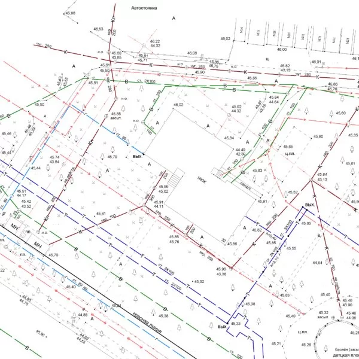

Коротко про мене
Я-Влад. Мені 23 роки. Навчався в КНУБА на спеціальності Геодезія та землеустрій.
Вже 2 роки займаюсь
улюбленою справою.Тому трішки розповім про геодезію.
Що таке Геодезія?
Геоде́зія (від дав.-гр. γεωδαισία — буквально «землемірство», від дав.-гр. γῆ' — Земля та дав.-гр. δαΐζω' — ділити) — наука про методи визначення форми і розмірів Землі, зображення земної поверхні на планах і картах, а також — точних вимірювань на місцевості, пов'язаних з розв'язанням різних наукових і практичних завдань.Детально в Вікіпедію
Почнемо з Фотограметрії (створення ортофотоплану місцевості)
Фотограмме́трія (грец. φως, у родовому відмінку φοτος — світло, γραμμα — написання, μετρεω — вимірюю) —
наука, котра вивчає явища, форми й положення різних предметів у просторі, об'єкти та їх розміри шляхом
вимірювань їх фотографічного зображення.
Фотограмметрія застосовується в геодезії, картографії, військовій справі, космічних дослідженнях.
За способом отримання знімків розрізняють наземну фотограмметрію та аерофотограмметрію.

Лазерне сканування
знімальна система, яка вимірює відстань від сканера до точок об'єкта з досить високою швидкістю і реєструє відповідні напрями з подальшим створенням тривимірного зображення в контурі хмари точок
Основні переваги лазерного сканування:- зниження витрат при виконанні виконавчої і топографічної зйомки
- зниження або повне виключення повторних додаткових зйомок об'єкта
- отримання більш точних і повних результатів виконавчої зйомки і як наслідок - усунення неоднозначностей при проведенні камеральних робіт;
- мінімізація часу польових робіт
- створення тривимірних моделей складних інженерних споруд і технологічного обладнання з високим ступенем деталізації і точності;
- зйомка фасадів історичних будівель, пам'ятників та унікальних об'єктів для їх реконструкції;
- дорожня зйомка
- зйомка тунелів;
- гірничодобувна промисловість;
- моніторинг будівель і споруд;
Топографія
Топографічна зйомка (топографічне знімання) — сукупність робіт зі створення топографічних карт або планів місцевості за допомогою вимірювань відстаней, висот, кутів тощо за допомогою різних інструментів (наземна зйомка),а також отримання зображень земної поверхні з літальних апаратів (аерофотозйомка, космічна зйомка). 
Висновок)
Маю надію вам сподобалось
Слава Україні Героям Слава